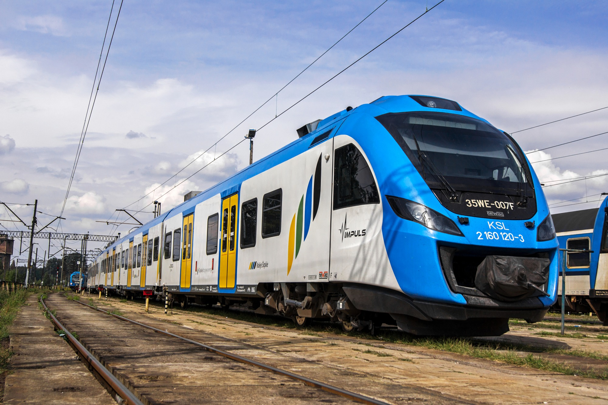

＼＼ciao／／
高速電車
高速電車に乗って、たくさんの知らない人とはなした。 みんなでビールで乾杯したことや、その中の一人が家で鯉を飼っていたことをはなしてたこと、 最後はみんなで握手してさよならしたのが、日本ではなかなかできなかったことで思い出にのこっています。 乾杯はドイツ語でプルースだったけど、日本語で皆が片言ながら『乾杯』と言ってくれた。 高速電車の先頭に現在の速度がわかる電光掲示板があり、 ひとが先頭に集まっていた。最高速度を達成すると歓声が上がり、 みてるだけで楽しかった。
南ドイツの空港フランクフルトから、北ドイツの首都ベルリンまでは電車じゃなく飛行機の方が実は安いらしい…。
アルプスなど続くヨーロッパ一周列車があるそうなのです。